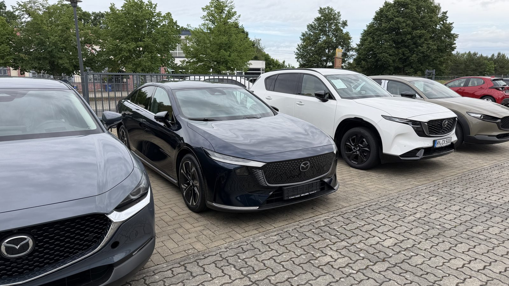

V zahraničí sa dá kúpiť auto od troch druhov predávajúcich: od autorizovaného predajcu značky, od bazáru či menšieho obchodníka a od súkromnej osoby. Každý z nich znamená inú cenu, iné daňové zaobchádzanie a iné riziko.
Zodpovednosť za vady
Toto je najväčší rozdiel, ktorý v cene nevidno.
Predajca zodpovedá spotrebiteľovi za vady, ktoré mal tovar pri predaji. V Európskej únii platí pri ojazdenom tovare táto zodpovednosť spravidla aspoň jeden rok. Ak sa po kúpe ukáže skrytá vada, ktorú auto malo už pri predaji, máte sa na koho obrátiť. Pri aute kúpenom v cudzine to v praxi znamená reklamáciu na diaľku a často aj prevoz auta späť, preto je táto ochrana slabšia, než sa zdá.
Autorizovaní predajcovia k ojazdeným autám často pridávajú aj vlastnú záruku značky, napríklad na rok alebo dva. To je výrazný rozdiel oproti bazáru.
Súkromná osoba predáva auto tak, ako stojí a leží. Zodpovednosť za vady sa v zmluve takmer vždy vylučuje a pri skrytej vade zostanete sami.
Kupuje firma? Ochrana spotrebiteľa sa na firmu nevzťahuje. Zodpovednosť za vady je vecou zmluvy a predajcovia ju pri predaji firmám bežne obmedzujú.
Cena a DPH
Súkromník nemá režijné náklady ani maržu, takže býva lacnejší. Pri porovnávaní cien však treba vedieť, čo cena v inzeráte obsahuje.
| Predávajúci | Kupuje súkromná osoba | Kupuje firma platiteľ DPH |
|---|---|---|
| Predajca, bežný režim | zaplatí zahraničnú DPH (v Nemecku 19 %) | predajca fakturuje bez DPH, slovenskú DPH si prizná sama |
| Predajca, osobitná úprava prirážky | DPH sa neplatí, cena je konečná | DPH sa neplatí, nie je čo odpočítať |
| Súkromná osoba | DPH sa neplatí | DPH sa neplatí, nie je čo odpočítať |
Pre firmu platiteľa DPH je zaujímavý len predajca v bežnom režime, ktorý vystaví faktúru bez DPH. Iba vtedy si môže uplatniť odpočet, od roku 2026 spravidla polovičný. Podrobnosti v článku Odpočet DPH pri kúpe auta.
Výnimkou je nové auto do šiestich mesiacov alebo do 6 000 km. Pri ňom sa DPH platí na Slovensku vždy, aj keď ho kupujete od súkromnej osoby.
Pozor na ponuky „s odpočtom DPH“ pri autách, ktoré ho mať nemôžu, napríklad keď ich predajca sám kúpil od súkromnej osoby. Ako rozpoznať podvod s DPH, píšeme v článku Odpočet DPH pri kúpe auta.
Doklady a história
Predajca zvyčajne odovzdá kompletné doklady, servisnú knižku alebo výpis z digitálnej servisnej histórie a často aj správu z vlastnej technickej kontroly. Pri súkromníkovi je to rôzne. Niekedy má v šuplíku všetky faktúry, inokedy nič.
Pri každom aute zo zahraničia si overte:
- či VIN na aute sedí s osvedčením o evidencii a s faktúrou alebo zmluvou,
- či máte obe časti osvedčenia o evidencii (v Nemecku „Zulassungsbescheinigung Teil I a Teil II“),
- či auto nie je hľadané ani zaťažené leasingom alebo úverom,
- či je auto v krajine pôvodu odhlásené, alebo aký doklad o vyradení z evidencie dostanete. Bez neho ho na Slovensku neprihlásite, viac v článku Prihlásenie dovezeného auta krok za krokom,
- históriu najazdených kilometrov a nehôd z výpisu podľa VIN,
- pri elektromobile skutočný stav batérie z certifikovaného testu.
Riziko podvodu
Podvodné inzeráty cielia práve na kupujúcich z inej krajiny. Typický znak je cena výrazne pod trhom, predávajúci, ktorý „je práve v zahraničí“, a tlak na rýchle rozhodnutie.
Samotná záloha podozrivá nie je. Pri overenom predajcovi je bežné poslať zálohu alebo aj celú sumu vopred, napríklad aj autorizovanému predajcovi značky. Bez nej si auto nikto nerezervuje a kým poň prídete, môže ho kúpiť niekto iný.
Pred zaplatením si preto overte, že predajca naozaj existuje:
- prevádzka na mapách a fotky predajne,
- recenzie od skutočných zákazníkov,
- zápis v obchodnom registri krajiny, kde sídli,
- platné IČ DPH v európskom registri VIES,
- bankový účet vedený na meno firmy v krajine, kde firma sídli.
Neposielajte peniaze neoverenému predávajúcemu: súkromnej osobe, ktorej auto ste nevideli vy ani nikto, komu dôverujete, alebo „firme“ bez adresy a histórie. Ak predávajúci tlačí na rýchlosť, je to dôvod spomaliť.
Pri dovoze cez nás predajcu overujeme ešte pred zaplatením.
Kedy sa oplatí ktorá možnosť
- Autorizovaný predajca: keď chcete istotu, servisnú históriu a záruku značky. Najvyššia cena, najmenšie riziko.
- Bazár alebo obchodník: kompromis. Zodpovednosť za vady platí, ale kvalita sa veľmi líši. Rozhodujú recenzie a to, ako ochotne obchodník odpovedá na otázky.
- Súkromná osoba: keď auto dobre poznáte, máte ho možnosť vidieť a preveriť a rozdiel v cene stojí za vyššie riziko.
Časté otázky
Platí záruka pri kúpe ojazdeného auta v Nemecku?
Pri kúpe od predajcu má spotrebiteľ nárok na zodpovednosť za vady, pri ojazdenom aute spravidla aspoň jeden rok. Pri kúpe od súkromnej osoby sa zodpovednosť za vady takmer vždy vylučuje. Záruka značky je dobrovoľná a ponúkajú ju najmä autorizovaní predajcovia.
Môže mi zahraničný predajca predať auto bez DPH, keď nie som firma?
Ojazdené auto nie. Bez DPH predáva len firme registrovanej pre DPH v inom štáte EÚ. Súkromná osoba zaplatí cenu s DPH krajiny predajcu, prípadne cenu v režime osobitnej úpravy, kde sa DPH neuvádza.
Ako sa auto od súkromníka dostane na Slovensko?
Buď ho odvezie kamión, alebo prídete po auto osobne a odveziete ho na prevozných či vývozných značkách. Súkromník vám zvyčajne s prepravou nepomôže, takže tú si zabezpečujete sami.
Pošlite nám inzerát skôr, ako zaplatíte
Ak ste si v zahraničí vyhliadli konkrétne auto, pozrieme sa na inzerát, históriu podľa VIN aj na to, ako je auto zdanené. Ak sa do kúpy pustíte, dovoz a prihlásenie vybavíme.
 Koľko naozaj stojí dovezené autoRozpis od ceny v inzeráte po auto prihlásené na Slovensku, aj s príkladmi.
Koľko naozaj stojí dovezené autoRozpis od ceny v inzeráte po auto prihlásené na Slovensku, aj s príkladmi. Odpočet DPH pri kúpe autaKedy si firma alebo živnostník DPH odpočíta, kedy len polovicu a kedy vôbec.
Odpočet DPH pri kúpe autaKedy si firma alebo živnostník DPH odpočíta, kedy len polovicu a kedy vôbec. Prečo je to isté auto v Nemecku či Dánsku lacnejšieVeľkosť trhu, firemné autá a ponuka. A kedy nízka cena neznamená výhodu.
Prečo je to isté auto v Nemecku či Dánsku lacnejšieVeľkosť trhu, firemné autá a ponuka. A kedy nízka cena neznamená výhodu.